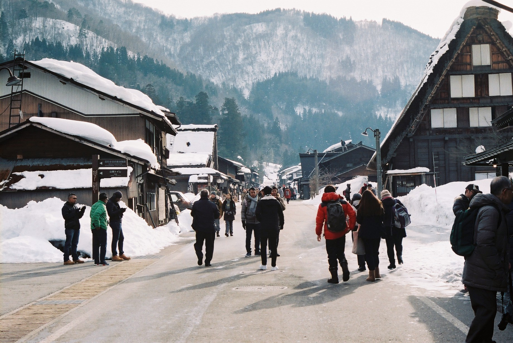

One takes little
steps along
one's path, and
if one takes them honestly and seriously, they lead to all sorts of funny places.
-Nicholas Vreeland-

I’m Ricardo, Ricardo S. Chao, while my mandarin name comes up with Chao, Shang-Han.
Born in Taipei, Taiwan. I’m
still now spending most of my time studying in my home country, and hopefully, after acquiring my
master
degree
(I’m now still a master candidate), I could work aboard and travel a lot during the work-time.
I love travel. Within the time I’m still acquiring my bachelor degree, I travel aboard 3-4 times a
year,
and
had skipped lots of my classes. (hehe) During the time, I’ve been to Vietnam, New York, China, and
Japan.
Especially Japan, within the 13 times my travels within the period, I’ve been to the country about 7-8
times,
and making me (kind of) experienced traveler within the region.
And also China, since the little difference within the language and culture between mainland China and
Taiwan, it makes me easy to travel
around the region without facing any kind of communicating obstacle.
As a conclusion, I would like share my passion to travel as long as any other story I’m facing within
my
daily life.
And just in case you would like to further contact me,
my e-mail is richiechao95@gmail.com, please fell
comfortable to
mail me regarding any possible issue, thanks.